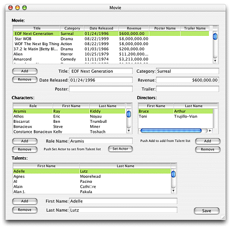
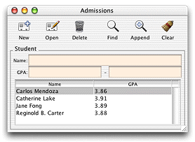

| PATH |

For both HTML and Java Client applications, WebObjects offers rapid development environments that are useful both for prototyping applications and for building full-featured, usable applications. The Java Client rapid development environment is called Direct to Java Client.
Direct to Java Client and non-direct Java Client are very similar in that they use the Enterprise Objects technology the same way to access data stores. They only differ at the user interface level.
Think of the relationship this way: a Java Client application is a completely customized Direct to Java Client application. Whereas the user interface in Direct to Java Client applications is generated dynamically at run time, the user interface in Java Client applications is built by hand.
If you need the precise user interface customization that the non-direct approach allows, it's much easier to integrate a custom interface file in a Direct to Java Client application than to develop a completely custom Java Client application (though this is possible and supported). That way, you get the best of both worlds: the advantages of Direct to Java Client and the advantages of custom interfaces built with the non-direct approach.
The primary advantage of Direct to Java Client is that its not necessary to write source code to generate or manage an application's user interface. This allows you to focus on writing business logic instead. Although the direct approach lets you manage user interfaces without writing much source code, the approach offers a number of mechanisms to customize user interfaces:
.nib filesThe user interfaces for the two approaches to Java Client development each have a particular character. However, keep in mind that it's possible to customize each type of interface to look like the other.
Figure 6-2 A typical Java Client application
Figure 6-3 A typical Direct to Java Client application
